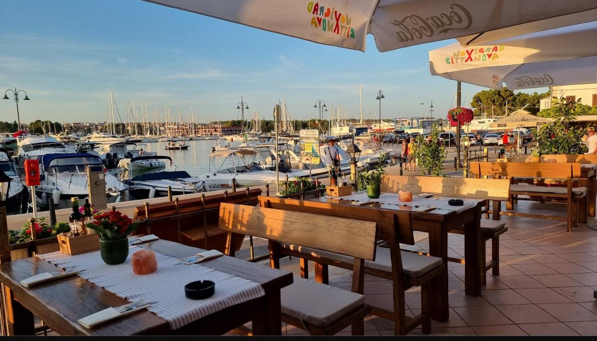

Ime iznad vrata
Maksimilijan Njegovan
1858. do 1930.
Admiral austrougarske mornarice, rođeni Hrvat, zapovjednik flote u Prvom svjetskom ratu.

Konoba koja pamti mornare stare flote
Stoljeće i pol istarska je obala slala svoje ljude na more pod habsburškom ratnom zastavom. Admiral Max nosi ime najvišeg među njima, Maksimilijana Njegovana, i čuva uspomenu na svakog austrougarskog mornara i obitelji koje su ih čekale u lučkim gradićima.
To se vidi i u prostoru. Mjed, tamno drvo, karte i makete brodova prikupljeni su zajedno s Gallerionom, novigradskim muzejom austrougarske mornarice, nekoliko ulica dalje u starom gradu. Vani, terasa leži u podnožju lukobrana Porporela, s brodicama Mandrača s jedne i otvorenim Jadranom s druge strane.
Kuhinja je jednostavnija od priče. Riba i školjke stižu s lokalnih brodova i peku se na gradelama, prže ili kuhaju na buzaru kako se u Novigradu oduvijek radilo. Kruh se peče u kući i dolazi s istarskim maslinovim uljem. Porcije su izdašne, a račun pošten.